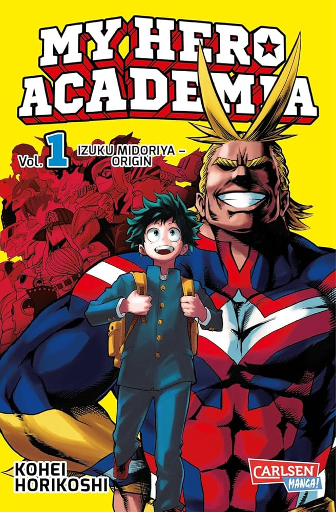

My hero academia is a story about a world where 80% of the worlds population has superpowers, and our main character is one of the 20% who doesnt. He still has the urge to save people with a smile like his idol All Might so he never gives up. Later on afters seeing our main character Izuku put himself in danger to save someone it inspires him to step in. Later on All Might gives Izuku powers and from there on he goes into the worlds best super hero school. The story has a lot more, and it's very complex but thats just the summary of the beginning. It tackles mental health in a way not seen in many shows, as most of the villains are just people who happened to be lost or abandoned when needed. The show inspires me to be a better person and help everyone that I can.